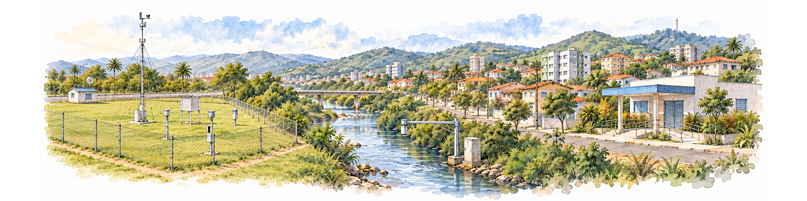

5 Seleção de fontes e qualificação de indicadores
Relacionar clima, ambiente e saúde exige reunir evidências sobre fenômenos observados de maneiras diferentes. A temperatura do ar descreve uma condição ambiental; dados populacionais ajudam a identificar quem pode estar exposto; registros de internação informam a utilização de serviços por determinados agravos; dados sobre equipes e infraestrutura permitem examinar a capacidade de resposta. A análise de situação articula essas informações no território, como apresenta o livro Curso análise de situação de saúde ambiental: ASISA-Queimadas (Gracie; Rodrigues, 2024, p. 16, 31–35).
Os capítulos anteriores distinguiram perigo, exposição, vulnerabilidade, efeitos e resposta, além de discutir como representá-los por indicadores. Para aplicar esses conceitos, é necessário encontrar fontes que forneçam as variáveis requeridas e verificar se seus territórios, períodos e populações são compatíveis. A escolha das fontes concretiza, assim, as definições do Capítulo 3 e os cuidados de espaço, tempo e qualidade do Capítulo 4.
Qualificar um indicador envolve avaliar sua adequação à finalidade pretendida e explicitar conceito, método, fontes e limites de interpretação. A ficha padronizada organiza essas informações e permite que equipes diferentes reconheçam a medida, examinem sua adequação e reconstruam seu cálculo (Organização Pan-Americana da Saúde, 2026). A padronização estabelece uma estrutura comum de documentação, preservando as particularidades de cada indicador e tornando visíveis as diferenças entre aplicações.
Este capítulo acompanha o percurso da pergunta aos requisitos de informação, à escolha das fontes e à ficha de qualificação. Em seguida, trata da obtenção e preservação dos dados, da validação e da atualização. A ficha começa a ser preenchida durante as escolhas e acompanha todo o processo; os resultados e as limitações encontrados orientam sua revisão.
5.1 Da pergunta aos requisitos de informação
Na produção brasileira sobre indicadores, Jannuzzi ressalta a necessidade de escolher medidas em função da pergunta e da etapa da política pública (Jannuzzi, 2005). Definir o uso pretendido orienta quais dimensões de clima e saúde precisam ser representadas e quais informações devem ser procuradas.
Para acompanhar a frequência de dias de calor segundo um critério definido, por exemplo, a equipe precisa especificar a variável térmica, o limiar, o território e o período. Se a pergunta incluir a população potencialmente exposta, será necessário incorporar dados sobre sua distribuição e definir como relacioná-los às condições térmicas. Examinar efeitos sobre a saúde acrescenta outras exigências: desfechos, população de referência e janelas temporais coerentes com a hipótese investigada. Cada ampliação da pergunta modifica os requisitos de dados e de interpretação.
Antes de comparar fontes, registre quais variáveis são necessárias, em que unidades, para quais territórios e períodos e com qual atraso máximo aceitável. Requisitos de uma análise de tendência podem ser diferentes dos de uma rotina de alerta. Essa especificação inicial, apoiada na definição do indicador, orientará a busca e a qualificação das fontes.
Fonte, referência metodológica e ficha cumprem funções distintas. A fonte fornece registros ou estimativas; a referência metodológica especifica a medida; a literatura de aplicação sustenta seus usos e limites; a ficha conecta essas informações. Uma página institucional pode ajudar a localizar o dado sem explicar a fórmula, e um artigo que utiliza um indicador pode não ser a publicação que o definiu.
5.2 Identificar a fonte além do nome da instituição
Fonte de dados é o recurso do qual se obtêm os registros ou as estimativas empregados na análise. Ela deve ser descrita em uma cadeia que distingue produção, produto e acesso. Uma rede de estações produz observações; uma base reúne os registros; um portal oferece acesso; uma consulta seleciona uma parte do conteúdo. Essas funções podem estar sob responsabilidade de uma mesma organização ou de várias.
O Instituto Nacional de Meteorologia (INMET) e o Instituto Brasileiro de Geografia e Estatística (IBGE) são instituições. Informar seus nomes é necessário, mas insuficiente para identificar o que foi utilizado. De modo semelhante, citar apenas o Departamento de Informática do Sistema Único de Saúde (DATASUS) não distingue sistemas, tabelas, arquivos e datas de extração. A referência precisa chegar ao produto, à variável e ao recorte efetivamente usados.
O Quadro 5.1 organiza os níveis de identificação. Eles são perguntas de documentação, e não uma hierarquia administrativa universal: alguns produtos não pertencem a um programa formal, e uma plataforma pode distribuir bases de diferentes produtores.
| Nível | Pergunta | O que registrar |
|---|---|---|
| Instituição responsável | Quem produz, mantém ou distribui? | Nome oficial e papel de cada organização |
| Programa ou sistema | Para qual finalidade o registro é produzido? | Nome, finalidade, universo e fluxo de produção |
| Produto ou base | Qual conjunto foi utilizado? | Título, edição, coleção ou versão e cobertura |
| Variável | Que característica entra no cálculo? | Nome ou código, definição, unidade e códigos de qualidade |
| Via de acesso | Como o conteúdo foi obtido? | Arquivo, tabela, serviço, catálogo ou painel e endereço |
| Extração | Que parte do produto foi usada? | Data e hora, filtros, arquivos, parâmetros e identificação da cópia |
A Figura 5.1 mostra a passagem de uma referência ampla para uma extração identificável. Leia os blocos de cima para baixo: cada pergunta acrescenta informação que o nome da instituição não fornece. As cenas de observação, arquivo e consulta ilustram atividades da cadeia; não representam uma instituição ou base específica. Os papéis podem ser distribuídos entre diferentes organizações.

Fonte: Elaboração própria; cenas conceituais, sem dados observados. Direção editorial: autor da obra; ilustração: ferramenta integrada image_gen; composição: edição desta obra. Licença dos arquivos autorais: GPL-3.0; fontes citadas mantêm suas licenças. Prompts e originais preservados no repositório. Revisão urbana da aquarela: image_gen, com o original e a referência visual da série.
Uma fonte deve ser identificada no nível que permite reconstruir o uso. A data de acesso não substitui a versão: a primeira informa quando houve a consulta; a segunda distingue uma edição do produto. Quando não há versionamento pelo produtor, registre essa limitação, preserve a extração permitida e identifique-a de forma inequívoca. Metadados, proveniência, licenças e identificadores persistentes sustentam a reutilização dos dados (World Wide Web Consortium, 2017).
O Apêndice B apresenta instrumentos, redes observacionais e caminhos de acesso aos dados do INMET e de qualidade do ar, com exemplos reais comentados.
5.3 Reconhecer como o dado foi produzido
A natureza da produção condiciona o que se pode inferir. Medição por instrumento, declaração em entrevista, registro de atendimento e estimativa por modelo podem ser fontes úteis, mas descrevem objetos diferentes. A avaliação começa pela correspondência entre o conteúdo disponível e o conceito do indicador.
Uma observação instrumental depende de instalação, calibração e controle de qualidade. Um produto de sensoriamento remoto depende também do sensor, do algoritmo e da coleção. Uma reanálise combina observações e modelo por assimilação de dados; seus valores são estimativas, e não medições em cada célula da grade (Hersbach et al., 2020). Esses aspectos devem aparecer na ficha quando afetarem a interpretação, com os cuidados de suporte e agregação discutidos no Capítulo 4.
Registros administrativos respondem a finalidades de serviço, gestão ou vigilância. O número registrado pode depender de acesso, cobertura do sistema, critérios de inclusão e práticas de preenchimento. Em inquéritos amostrais, estimativas populacionais dependem do desenho, dos pesos e do tratamento da não resposta. Disponibilidade de microdados não autoriza ignorar essas condições nem tratar todos os registros como observações independentes de uma amostra aleatória simples.
Lima, Schramm, Coeli e Silva sistematizaram dimensões de qualidade aplicadas aos sistemas de informação em saúde brasileiros, incluindo cobertura, completitude, consistência, confiabilidade, validade e oportunidade (Lima et al., 2009). A distinção entre cobertura e completitude é especialmente útil: uma base pode ter campos bem preenchidos nos registros recebidos e ainda deixar de captar parte dos eventos de interesse. Uma avaliação deve declarar qual dimensão examinou, para qual variável, território e período; a conclusão não se estende automaticamente à base inteira.
Previsões e projeções exigem documentação adicional. Para uma previsão, guarde a rodada, o momento de emissão, o horizonte e o período de validade. Para uma projeção, identifique cenário, modelos, período de referência e método de regionalização. A previsão recebida antes de um evento e a série consolidada depois dele cumprem funções diferentes; projeções expressam futuros condicionais às hipóteses adotadas (Matthews et al., 2022; World Meteorological Organization; World Health Organization, 2015).
Combinar fontes pode ampliar a compreensão, mas exige examinar sua dependência. Dois painéis podem distribuir a mesma base; um produto derivado e sua reanálise de origem compartilham parte da informação. Concordância entre eles não equivale a confirmação independente. Quando os valores divergem, investigue definição, cobertura, período, revisão e processamento antes de escolher uma série (World Wide Web Consortium, 2013).
5.4 Qualificar e selecionar as fontes
Com os requisitos definidos e a origem dos dados identificada, é possível avaliar as fontes candidatas. Qualificar uma fonte, neste percurso, significa examinar sua adequação ao indicador e ao uso pretendido, documentando cobertura, método de produção, qualidade e limitações. Essa avaliação sustenta a escolha e fornece parte das informações que acompanharão o indicador na ficha.
O Quadro 5.2 orienta essa avaliação. Os critérios devem ser aplicados à edição e ao recorte pretendidos; reputação institucional e aparência do portal não bastam para estabelecer adequação.
| Critério | Pergunta de avaliação |
|---|---|
| Responsabilidade | Quem produz, mantém e responde pelo recurso? |
| Correspondência conceitual | A variável representa o que a definição do indicador exige? |
| Cobertura e suporte | Espaço, tempo e população atendem à finalidade? |
| Qualidade | Há documentação, controles e avaliação no contexto de uso? |
| Oportunidade | O atraso de disponibilização permite a decisão prevista? |
| Identificação e preservação | É possível reconhecer a edição e reconstruir a extração? |
| Integração | Unidades, códigos, calendários e formatos são compatíveis ou conversíveis? |
| Condições de uso | O acesso, o processamento e o compartilhamento pretendidos são permitidos? |
| Continuidade | Há atualização, responsáveis e informação sobre mudanças? |
A seleção deve separar requisitos indispensáveis de vantagens desejáveis. Correspondência conceitual, cobertura suficiente para o uso e condições de acesso precisam ser atendidas. Entre as fontes elegíveis, podem-se comparar atraso, resolução, estabilidade e custo de manutenção. Uma soma de pontos não deve permitir que facilidade de acesso compense uma variável incompatível.
A Figura 5.2 apresenta essa sequência. Primeiro define-se a pergunta e verificam-se os requisitos; uma fonte incompatível exige procurar outra opção ou rever a pergunta, com justificativa. A comparação de vantagens só ocorre entre alternativas elegíveis. O retorno lateral representa revisão da escolha, e não autorização para flexibilizar critérios apenas porque o resultado de uma fonte parece conveniente.

Fonte: Elaboração própria; cenas conceituais, sem dados observados. Direção editorial: autor da obra; ilustração: ferramenta integrada image_gen; composição: edição desta obra. Licença dos arquivos autorais: GPL-3.0; fontes citadas mantêm suas licenças. Prompts e originais preservados no repositório. Revisão urbana da aquarela: image_gen, com o original e a referência visual da série.
Considere uma equipe que procura uma série de temperatura do ar para acompanhar condições térmicas relevantes à vigilância. Uma imagem de temperatura da superfície não substitui essa variável apenas por apresentar maior detalhe espacial. Uma grade pode ampliar a cobertura territorial, mas precisa de avaliação compatível com o uso; uma estação oferece observação local, sem representar automaticamente todo o município. A escolha exige registrar essas diferenças e justificar o método de atribuição territorial (Hersbach et al., 2020; World Meteorological Organization, 2023).
Combinações devem definir a função de cada entrada: fonte de cálculo, referência de comparação, informação auxiliar ou alternativa de contingência. Uma série consolidada pode apoiar tendências e outra, mais oportuna, acompanhar a situação recente. Elas devem permanecer identificadas. Para mudar a fonte no meio de uma série, planeje a comparação no período de sobreposição, quando disponível, e documente os efeitos sobre a comparabilidade.
Registre também por que alternativas plausíveis foram descartadas. Incompatibilidade conceitual, cobertura insuficiente, atraso excessivo ou falta de documentação são razões verificáveis. Se nenhuma fonte atender aos requisitos, a ficha deve informar a limitação; preencher a lacuna com um valor sem sustentação não resolve a ausência de dados.
5.5 Usar indicadores publicados ou calcular uma variante
Sistemas oficiais e observatórios também fornecem indicadores prontos. Utilizá-los pode preservar comparabilidade e reduzir processamento, desde que sejam conhecidos definição, método, universo, versão e limitações. Recalcular não é necessariamente melhor: a equipe local pode não ter acesso aos ajustes, pesos ou registros considerados na publicação (Organização Pan-Americana da Saúde, 2026; United Nations General Assembly, 2014).
Há três situações que precisam ser identificadas na ficha:
- Uso do valor publicado: selecionam-se indicador, edição, território e período, preservando sua definição e atribuindo o resultado ao produtor.
- Reprodução do método: executam-se as regras publicadas para conferir ou obter o resultado; a equipe documenta entradas, diferenças e verificações.
- Adaptação: alteram-se componentes, população, período de referência ou outra regra substantiva; a variante recebe identificação e justificativa próprias.
No caso da concentração média anual de material particulado com diâmetro aerodinâmico igual ou inferior a 2,5 µm (PM2,5), a ficha AMB-AR-01 trata do indicador 11.6.2 dos Objetivos de Desenvolvimento Sustentável (ODS). Uma média de monitor local e uma média populacional obtida por modelo não são valores intercambiáveis. Uma estimativa própria não deve ser atribuída à Organização Mundial da Saúde (OMS), agência custodiante do indicador, apenas porque usa uma fórmula semelhante (World Health Organization, 2026).
Antes de adotar ou reproduzir um resultado, compare conceito, unidade, população, suporte espacial, período e edição. Em caso de divergência, investigue também arredondamento, critérios de inclusão, atualizações e revisões. A identificação de cálculo próprio deve acompanhar o valor, a ficha e a visualização em que ele aparece.
Essas distinções precisam integrar a documentação do indicador. A ficha de qualificação reúne a definição adotada, as fontes selecionadas e as condições em que o resultado pode ser interpretado.
5.6 A ficha de qualificação da RIPSA e sua contribuição para este livro
A Rede Interagencial de Informações para a Saúde (RIPSA) articula instituições produtoras e usuárias de informações para a saúde no Brasil. Sua Ficha de Qualificação do Indicador (FQI) organiza a documentação que acompanha cada medida: ajuda o leitor a reconhecer o que está sendo representado e a equipe a reproduzir o cálculo e avaliar os usos possíveis. A terceira edição de Indicadores Básicos para a Saúde no Brasil, conhecida como Livro Verde, apresenta a versão com 16 campos (Organização Pan-Americana da Saúde, 2026, p. 27–28).
A FQI da RIPSA serviu de inspiração e referência estrutural para as fichas deste livro. Sua contribuição central é reunir o número e as condições de sua interpretação em uma mesma documentação. Uma fórmula isolada não informa, por exemplo, quais registros podem entrar no cálculo, quando uma comparação deixa de ser válida ou quem deve acompanhar a atualização.
O guia de saúde ambiental de 2011 já utilizava a ficha da RIPSA para exemplificar indicadores do modelo Força Motriz–Pressão–Situação–Exposição–Efeito–Ação, articulando conceito, interpretação, usos, limitações, fontes e cálculo (Brasil. Ministério da Saúde, 2011, p. 95).
O Quadro 5.3 apresenta os campos e sua função. Trata-se de uma síntese explicativa da estrutura de 2026, não de uma ficha oficial preenchida nem de um novo indicador da Rede.
| Campo da FQI | Função na leitura do indicador |
|---|---|
| Código da RIPSA | Identificar a medida no catálogo da Rede. |
| Título completo | Nomear precisamente o que é mensurado. |
| Título resumido | Permitir identificação em apresentações compactas. |
| Conceito | Delimitar a dimensão representada. |
| Interpretação | Orientar a leitura do resultado. |
| Usos | Indicar finalidades de aplicação. |
| Limitações | Registrar restrições e cuidados. |
| Fontes de dados | Identificar as bases de entrada. |
| Fórmula de cálculo | Expressar a operação matemática. |
| Método de cálculo | Explicar os procedimentos de produção. |
| Variáveis e categorias de análise | Definir os recortes analíticos. |
| Granularidade | Especificar a desagregação territorial recomendada. |
| Periodicidade de atualização | Informar a frequência de renovação. |
| Responsabilidade gerencial | Identificar a gestão do acompanhamento. |
| Notas | Acrescentar esclarecimentos. |
| Análise descritiva do indicador | Contextualizar o comportamento e sua apresentação. |
Para ler uma ficha, convém confrontar campos que parecem próximos. Retomando o exemplo didático do Capítulo 3 — número anual de dias com temperatura máxima do ar acima de um limiar \(L\) justificado para a aplicação —, o conceito é a frequência de dias que atendem ao critério; a interpretação explica o que significa uma contagem maior. O uso pode ser acompanhar a frequência ao longo do tempo; a limitação lembra que essa contagem não demonstra adoecimento. A fórmula expressa a soma dos dias elegíveis que ultrapassam \(L\), enquanto o método deve especificar seleção da série, cobertura mínima, controle de qualidade e tratamento de ausências. São perguntas complementares, não campos intercambiáveis.
A Figura 5.3 agrupa a documentação em cinco blocos para facilitar sua leitura. Os blocos são uma organização didática deste livro, não uma classificação oficial adicional da RIPSA. A seta de inspiração indica a origem metodológica; a faixa inferior mostra as informações acrescentadas para representar clima, ambiente e suas relações com a saúde.

Fonte: Organização didática própria inspirada na FQI da RIPSA (Organização Pan-Americana da Saúde, 2026, p. 27–28). Direção editorial: autor da obra; ilustração: ferramenta integrada image_gen; composição e revisão: edição desta obra. Licença dos arquivos autorais: GPL-3.0; fontes citadas mantêm suas licenças. Prompts e originais preservados no repositório. Revisão urbana da aquarela: image_gen, com o original e a referência visual da série.
Nas fichas deste livro, o código é um identificador editorial próprio: não corresponde a um código oficial da RIPSA e não implica inclusão no catálogo da Rede. O núcleo é adaptado e ampliado com resolução espacial e temporal, período e limiar de referência, acesso e processamento, qualidade e incerteza, comparabilidade, defasagens e aplicação na gestão. Granularidade descreve a desagregação recomendada do resultado; resolução espacial original descreve o suporte do dado de entrada. A disponibilidade de uma malha fina não garante que o indicador seja válido em qualquer recorte pequeno.
Também é necessário distinguir documentar uma análise de apresentar resultados. A FQI oficial prevê uma análise descritiva contextualizada. As fichas deste livro orientam quais distribuições, recortes e verificações devem acompanhar o indicador; resultados dependentes de território e período só podem ser apresentados quando houver dados identificados e análise realizada. Preencher a ficha não certifica a qualidade da base nem transforma o indicador em protocolo operacional.
5.6.1 Organizar os campos sem repetir informações
A ficha deve permitir três verificações: identidade, reprodução e interpretação. Na primeira, duas equipes reconhecem se estão tratando da mesma medida. Na segunda, conseguem reconstruir o cálculo com as entradas e regras documentadas. Na terceira, identificam as conclusões sustentadas e as que ultrapassariam o indicador. A presença dos campos, por si só, não garante esses resultados.
O Quadro 5.4 detalha a organização funcional das fichas da obra. Esses blocos ampliam a apresentação didática da Figura 5.3 e ajudam a localizar informações; não substituem os campos da FQI nem criam uma classificação oficial da RIPSA.
| Bloco | Conteúdo | Pergunta que deve responder |
|---|---|---|
| Identificação | Código editorial, títulos, tema e referência metodológica | Qual medida está sendo usada? |
| Significado | Conceito, objetivo, interpretação e usos | O que representa e para que serve? |
| Cálculo | Fórmula, método, entradas, unidade e regras de inclusão | Como se chega ao resultado? |
| Recortes | Variáveis, categorias, território e granularidade | Para quais unidades e grupos se pode analisar? |
| Tempo e espaço | Resoluções originais, suporte, agregação, período e limiares | Quais compatibilizações são necessárias? |
| Fontes | Produto, edição, acesso e processamento | De onde vieram os dados? |
| Qualidade | Cobertura, incerteza, comparabilidade e limitações | O que restringe a leitura do resultado? |
| Saúde e gestão | Relação com desfechos, defasagens e aplicação | Como o resultado pode apoiar a ação? |
| Manutenção e comunicação | Atualização, responsabilidades, notas e análise descritiva | Quem acompanha e como apresenta o indicador? |
| Referências | Especificação, documentação e literatura de aplicação | Que evidência sustenta cada parte da ficha? |
Campos não aplicáveis precisam ser distinguidos de informação desconhecida. Uma contagem pode não ter denominador; isso deve ser indicado, sem criar um denominador artificial. Uma fonte cuja incerteza não foi quantificada tem uma limitação a registrar, não uma incerteza nula. Expressões como “não informado pelo produtor” e “não aplicável a esta medida” descrevem situações diferentes.
Para clima e ambiente, a ficha precisa explicitar ainda o suporte da entrada, o método de agregação, o período de referência e as regras de limiar ou sequência quando existirem. Fuso, calendário, ausências e defasagens podem alterar o cálculo e o uso. Remeter ao manual é útil, mas as escolhas adotadas na aplicação devem estar identificadas na própria ficha ou em documentação vinculada.
5.6.2 Ler uma ficha junto das fontes
A leitura pode começar por quatro perguntas: o conceito corresponde ao problema; os usos incluem a finalidade pretendida; as limitações permitem aquela comparação; e as fontes atendem ao recorte necessário? Só então convém examinar a fórmula e o processamento. Essa ordem evita que a possibilidade de executar uma operação seja confundida com sua adequação.
Considere novamente a ficha AMB-AR-01. Sua resolução temporal anual orienta análises de exposição de longo prazo; não informa, sozinha, a intensidade de um episódio diário de fumaça. A ponderação populacional exige identificar também a população de referência. Mudar essa entrada pode alterar a síntese mesmo sem mudança na superfície de concentração. Esse exercício de leitura relaciona conceito, método, tempo e limitações sem atribuir resultados a um território inexistente (World Health Organization, 2026).
As fontes devem ser consultadas em conjunto com as referências metodológicas. Registre autoria, título, edição e ano de cada documento; acrescente identificador de objeto digital (DOI), endereço e data de acesso quando cabíveis. A ficha deve permitir localizar a referência que sustenta cada definição, procedimento e interpretação.
5.7 Acesso, preservação e proveniência
A ficha especifica as fontes e os procedimentos necessários para produzir o indicador. Ao obter os dados, a equipe precisa registrar como essa especificação foi executada: quais arquivos recebeu, quais filtros aplicou e quais decisões tomou durante o tratamento. A preservação dessas evidências permite conferir o resultado e repetir o trabalho em uma atualização.
5.7.1 Painéis, serviços e arquivos
O painel é uma interface de consulta; pode arredondar valores, aplicar filtros e ocultar etapas do cálculo. Uma interface de programação de aplicações (API) permite automatizar consultas, mas sua resposta depende de parâmetros, paginação, versão e momento do acesso. Um repositório reúne depósitos cuja autoria e documentação precisam ser examinadas individualmente. Um arquivo datado pode ser mais fácil de preservar, mas continua a exigir dicionário e identificação de origem (World Wide Web Consortium, 2017).
A transparência envolve tanto os dados quanto as condições de acesso. Os princípios FAIR, do inglês Findable, Accessible, Interoperable and Reusable, orientam encontrabilidade, acessibilidade, interoperabilidade e reutilização. Acessibilidade pode incluir procedimentos de autenticação e autorização; não significa que todo dado deva ser aberto. Esses princípios favorecem a reutilização, mas não certificam a validade de uma medida para qualquer finalidade (Wilkinson et al., 2016).
Para documentar uma extração, registre:
- Produto, edição ou versão e endereço de acesso, também chamado URL (Uniform Resource Locator);
- Arquivos ou consultas, variáveis, filtros, parâmetros e ordenação quando relevante;
- Data e hora da extração, com fuso, e período a que os dados se referem;
- Formato, codificação de caracteres, unidades, calendário e dicionário de campos;
- Paginação, limites do serviço, falhas e verificações de que a extração foi concluída;
- Condições de uso e local de preservação da cópia, quando permitido;
- Versão do código e das ferramentas usadas para obter e preparar os dados.
O formato também requer cuidado. Um arquivo de valores separados por vírgulas (CSV) normalmente não descreve, por si só, tipos e unidades. Códigos territoriais podem perder zeros à esquerda ao serem lidos como números. Datas ambíguas podem ser interpretadas em ordem incorreta, e códigos de ausência podem ser confundidos com observações. Preserve o original e faça conversões em uma cópia de trabalho, com regras explícitas.
Uma contribuição brasileira para essa etapa é o pacote microdatasus, apresentado por Saldanha, Bastos e Barcellos para download e pré-processamento de microdados distribuídos pelo DATASUS (Saldanha; Bastos; Barcellos, 2019). Ao usar uma ferramenta desse tipo, cite tanto a base quanto o software. Registre a versão empregada e as transformações realizadas: automatizar acesso e recodificação não decide qual população, desfecho ou recorte é adequado à pergunta.
5.7.2 Reconstruir o caminho até o resultado
Proveniência é o registro de como um resultado foi produzido: quais entradas foram usadas, quais operações ocorreram e quem assumiu cada responsabilidade. O modelo PROV do Consórcio World Wide Web organiza essa descrição em entidades, atividades e agentes (World Wide Web Consortium, 2013). Na prática, é preciso conectar arquivo de origem, extração, tratamento, cálculo, verificações e publicação.
A Figura 5.4 representa esse percurso. A coluna de etapas permite acompanhar o resultado desde a versão da fonte até a revisão; a documentação registra o que foi utilizado e decidido em cada passagem. O retorno ao início indica que atualizações podem exigir nova extração e recálculo. A sequência não transforma uma verificação de software em validação científica: a adequação do conceito e da interpretação precisa ser examinada durante todo o trabalho.

Fonte: Elaboração própria; cenas conceituais, sem dados observados. Direção editorial: autor da obra; ilustração: ferramenta integrada image_gen; composição: edição desta obra. Licença dos arquivos autorais: GPL-3.0; fontes citadas mantêm suas licenças. Prompts e originais preservados no repositório. Revisão urbana da aquarela: image_gen, com o original e a referência visual da série.
Além de guardar o código, documente as decisões que ele executa. Seleção de estações, retirada de registros, tratamento de ausências, definição de limiar, uso de pesos e agregação territorial modificam o resultado. Uma justificativa deve permitir entender a escolha, enquanto o código permite reproduzir a operação. A equipe deve conseguir identificar os dados descartados ou transformados e a razão de cada tratamento.
O conjunto preservado deve reunir entradas permitidas, manifesto, dicionários, parâmetros, código, versões das dependências, registros das verificações e saída publicada. Quando não for possível redistribuir a entrada, documente o procedimento legítimo de acesso e as restrições à reprodução. Separar arquivo original, base preparada e resultado evita que uma correção elimine a evidência do estado anterior.
5.8 Validar, atualizar e manter a interpretação
A qualificação prossegue quando os dados são obtidos e o indicador é calculado. Antes de publicar a ficha e os resultados ou incorporá-los a uma rotina, recomenda-se revisão de quatro aspectos: correspondência entre conceito e fenômeno; coerência do cálculo; sustentação das interpretações sanitárias; e viabilidade de acesso, atualização e resposta. Esses aspectos se relacionam: uma fórmula correta pode usar uma variável inadequada, e uma estimativa válida pode chegar tarde para a decisão.
A revisão é favorecida por colaboração entre áreas. Especialistas ambientais examinam a medida do fenômeno; epidemiologia verifica desfechos, populações e inferências; geografia revisa suporte e agregação; a equipe de dados examina acesso, processamento e rastreabilidade; a gestão define responsabilidades e condições de uso. A divisão deve ser ajustada à equipe disponível, com responsabilidades explícitas.
Verificações automáticas ajudam a detectar campos ausentes, identificadores duplicados, referências inexistentes, unidades incompatíveis e falhas de processamento. Elas precisam ser acompanhadas de análise dos dados: cobertura, completitude, consistência, duplicidade e oportunidade, conforme o sistema e a finalidade (Lima et al., 2009; World Health Organization, 2023). Para índices compostos, também se avalia a sensibilidade a normalização, pesos e agregação (Organisation for Economic Co-operation and Development; European Union; European Commission. Joint Research Centre, 2008).
5.8.1 Distinguir atualização de dados e revisão de método
Uma nova observação pode ampliar a série sem alterar a definição. A chegada de registros atrasados pode corrigir períodos anteriores. Já mudanças de algoritmo, população de referência, malha territorial ou critério de inclusão podem exigir recálculo e comprometer comparações entre versões. O histórico deve permitir distinguir essas situações.
Cada revisão deve registrar:
- Data, responsável e versão da ficha ou do produto;
- Campos, fontes ou procedimentos alterados;
- Motivo e documentação que sustentam a mudança;
- Períodos, territórios e resultados afetados;
- Necessidade de recálculo e compatibilidade com a versão anterior;
- Forma de comunicar a alteração aos usuários.
A substituição silenciosa de valores impede avaliar se a mudança decorre do fenômeno, de registros adicionais ou da mensuração. Preserve versões anteriores quando permitido e mantenha uma nota de revisão ligada ao resultado atualizado (World Wide Web Consortium, 2017). A rotina também deve prever quem acompanha a disponibilidade da fonte, como identifica atrasos e como sinaliza uma interrupção.
5.9 Do repertório temático às fichas do catálogo
Os capítulos temáticos apresentam mecanismos, relações com a saúde e um repertório de indicadores com remissões às fichas da Parte IV. Esse repertório permite distinguir medidas de ocorrência, frequência, duração, intensidade, exposição, efeitos e resposta. A seleção não procura um indicador capaz de resumir todas essas dimensões: busca medidas cujo significado corresponda à pergunta (Jannuzzi, 2005).
Para ondas de calor, por exemplo, contar episódios, somar dias participantes e identificar a duração máxima responde a perguntas diferentes. Uma medida de estresse térmico ou de população exposta acrescenta outras informações. As definições de cada família são discutidas no Capítulo 7, e suas especificações estão nas fichas da Parte IV; aqui, interessa reconhecer que proximidade temática não implica equivalência metodológica.
O Quadro 5.5 explicita os requisitos de inclusão no catálogo. Eles orientam a seleção editorial; não constituem uma certificação emitida pelas instituições citadas.
| Requisito | Evidência necessária |
|---|---|
| Existência verificável | Definição localizável em metadado oficial, norma ou literatura científica |
| Especificação explícita | Conceito, entradas, método, unidade e regras de inclusão descritos |
| Relevância | Dimensão e finalidade de uso identificadas |
| Aplicação sanitária | Uso documentado ou interpretação fundamentada para pesquisa, vigilância ou gestão |
| Reprodução possível | Dados e decisões críticas identificáveis, com condições de acesso declaradas |
| Qualidade avaliável | Cobertura, limitações e fontes de incerteza passíveis de exame |
| Contribuição própria | Significado que não apenas duplica outra medida |
| Adaptações transparentes | Variantes distinguidas da especificação de origem |
Quando não se encontra definição suficiente, quando o mesmo nome reúne métodos incompatíveis ou quando a aplicação depende de dados indisponíveis sem alternativa validada, a inclusão deve ser adiada ou delimitada. Isso não invalida a proposta; explicita que ainda não há sustentação para uma ficha completa. O livro não cria indicadores para preencher espaços do catálogo nem inventa resultados para ilustrar sua aplicação.
5.9.1 Consultar as fichas e preparar o uso
As fichas estão reunidas na Parte IV, em nove capítulos que seguem a sequência temática das partes II e III. A lista de fichas e o catálogo de fontes facilitam a localização, mas a interpretação depende também do contexto apresentado no capítulo.
Para uma aplicação, selecione a dimensão necessária, leia conceito e limitações, confira fontes e versão e avalie se o recorte espacial e temporal atende à pergunta. Depois, documente os procedimentos, examine a qualidade e vincule o resultado a responsabilidades de acompanhamento. Um indicador adequado ao monitoramento não se transforma automaticamente em gatilho de alerta: esse uso requer critérios e procedimentos próprios, discutidos no Capítulo 6.
5.10 Síntese
A pergunta de clima e saúde define as dimensões a representar e os requisitos de informação. A qualificação das fontes verifica se os dados disponíveis atendem a esses requisitos. A ficha reúne conceito, método, fontes, usos e limitações em uma estrutura comum, inspirada na RIPSA e ampliada para explicitar as escolhas de espaço, tempo, referência e incerteza.
A documentação da extração e do processamento permite reconstruir o resultado; a validação verifica a coerência entre a especificação, os dados utilizados e a interpretação. Esses registros ajudam a distinguir diferenças no fenômeno de diferenças na forma de produzir o indicador.
A qualidade desse conjunto depende também da manutenção. Saber quem verifica uma mudança, quais resultados precisam ser recalculados e como a revisão será comunicada é parte do uso responsável da informação, desde a primeira publicação até as atualizações seguintes.
Com fontes e fichas documentadas, o próximo passo é vincular os indicadores às decisões que devem apoiar. O Capítulo 6 encerra os fundamentos e métodos com um roteiro para selecionar painéis, definir regras de ação, atribuir responsabilidades e avaliar resultados.